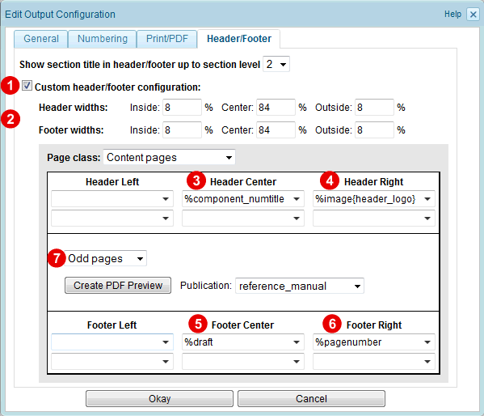
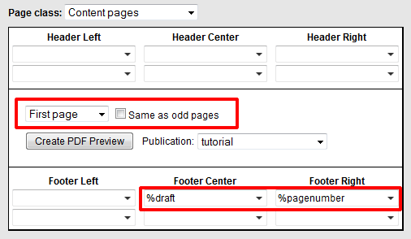

1.13.3.3. Defining the header/footer content
To define the content of the page-header and -footer, open the PDF output configuration and select the "Header/Footer" tab:
- Check the "Custom header/footer" checkbox
 .
. - Enter the widths in percentage of the columns of the header and footer table (
 ). You will have to experiment to find the correct widths for your page-design. In our example enter the header-widths 8%, 84%, 8%. Enter the same widths for the footer.
). You will have to experiment to find the correct widths for your page-design. In our example enter the header-widths 8%, 84%, 8%. Enter the same widths for the footer. - Next we have to define the contents of the header- and footer-table.
Note that different header/footer content can be defined for the different page types (Content pages, table of contents, index, ...). However, in our example we want to have the same header/footer for all page types. Therefore check the "Same as content pages" box for all page types other than "Content pages".

For the page type "Content pages" we want the chapter title to appear in the header. Therefore we enter the placeholder %component_numtitle in the center column  of the header table. Additionally, on the outer side of the page, a logo shall be displayed. Assuming that the logo-image has the alias name header_logo, we enter the placeholder %image{header_logo} in the right column
of the header table. Additionally, on the outer side of the page, a logo shall be displayed. Assuming that the logo-image has the alias name header_logo, we enter the placeholder %image{header_logo} in the right column  of the header-table.
of the header-table.
In the footer we want the the draft indication to be shown in the center and the page-number to be printed on the outer side of the page. Therefore, enter the placeholder %draft in the center cell  and the placeholder %page_number in the right column
and the placeholder %page_number in the right column  of the footer-table.
of the footer-table.

Figure 1.13.11. Customizing the header/footer content
For the complete list of placeholders that can be entered in the header/footer cells, see Section 2.6.2.1.5, “Header/Footer settings”.
Notice that the settings we have entered are for odd pages, as this is the default selection of the "Sequence" listbox  . However, we want the same content also for even pages. Therefore select "Even pages" from the "Sequence listbox" and check the "Same as odd pages" checkbox (if not already checked):
. However, we want the same content also for even pages. Therefore select "Even pages" from the "Sequence listbox" and check the "Same as odd pages" checkbox (if not already checked):
You may assume that the logo and page-number is printed on the inner-side of even pages, because we have entered the placeholders in the cell on the right-side for odd pages. However, if the "Print double-sided" output option is enabled and the "Same as odd pages" checkbox for even pages is checked, then the columns defined for odd pages are automatically mirrored for even pages. Besides the column content, also the text-alignment is changed from left to right and from right to left. Therefore the logo and the page-number always appears on the outer-side.
When you have a look at the example pages above, you'll see that there is no header-bar on the first page of a chapter (i.e. the page that starts with the chapter title). Also the blank page does not have a header-bar. Therefore select "First page" from the Sequence listbox and uncheck the "Same as odd pages" checkbox. Now, just enter the placeholder %draft in the center cell and the placeholder %pagenumber in the right cell of the footer table, but leave the header cells empty:

Figure 1.13.12. Header/footer content of first page
Do the same for the "Blank page" sequence. But this time enter the placeholder %pagenumber in the left cell of the footer, because the page-number shall appear on the outer-side (note that blank pages only appear on the back-side of a sheet of paper, i.e. are inserted as even pages).